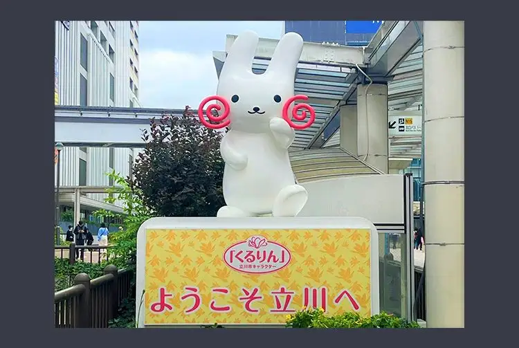
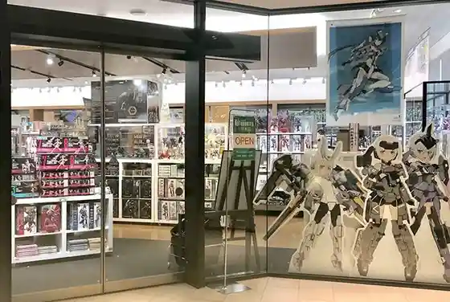
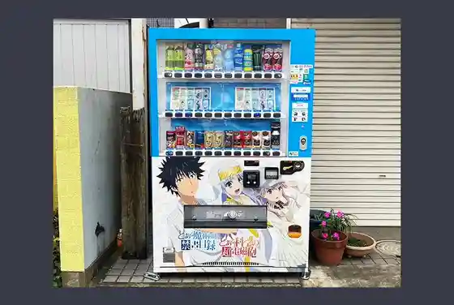
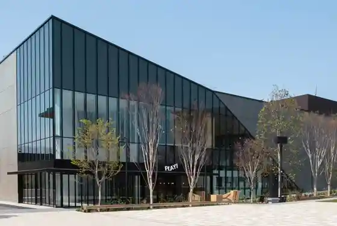

Tachikawa, Tokyo: things to do, food and stays
Tachikawa · Tokyo
Tachikawa
Highlighted on the Tokyo map.

Sights
Tachikawa Character (Kururin) Welcome Board
Hisashi Ya

(Toaru) Series Vending Machine (TV Anime A Certain Magical Index)

Toritsu Tamagawajosui Greenway

PLAY! MUSEUM

Kikugawa Sono
Tachikawa Iseya Main Shop
Tachikawa Park
Showa Kinen Park
Tachikawa Manga Park (Toaru Series Vending Machine)
Irifune Chaya
Tachikawa Yu Residence Ume Baths
Dining
RAINBOW SPICE
レインボウスパイス

Chinese or Asian restaurant in Tachikawa, Tokyo.
Ganso Ichijoryu Ganko Ramen Tachikawa tamakan bunten
元祖一条流 がんこラーメン 立川たま館分店

Noodle restaurant in Tachikawa, Tokyo.
Kyo Ka
鏡花

Noodle restaurant in Tachikawa, Tokyo.
Ramen Jiro Tachikawa ten
ラーメン二郎 立川店

Noodle restaurant in Tachikawa, Tokyo.
Ichiroku Coffee Ten
一六珈琲店

Cafe in Tachikawa, Tokyo.
Soba Kaiseki Muan Reservation
蕎麦懐石 無庵

Noodle restaurant in Tachikawa, Tokyo.
OLD NEW DINER Reservation
オールドニューダイナー

Izakaya or bar in Tachikawa, Tokyo.
Ramen Pattapata
らーめん ぱったぱた

Noodle restaurant in Tachikawa, Tokyo.
Ramen Chicken
らーめん チキント

Noodle restaurant in Tachikawa, Tokyo.
Hoka Ramen
宝華らぁめん

Noodle restaurant in Tachikawa, Tokyo.
Ramen Arashin
ラーメン あらしん

Noodle restaurant in Tachikawa, Tokyo.
Emilie Floge
エミリー・フローゲ

Cafe in Tachikawa, Tokyo.
UMA TSUKEMEN

Noodle restaurant in Tachikawa, Tokyo.
MENSHOW Tachikawa ten
麺笑 立川店

Noodle restaurant in Tachikawa, Tokyo.
Tachikawa Seimenjo Misora
立川製麺所 翠空

Noodle restaurant in Tachikawa, Tokyo.
Curry Kaigishitsu
カレー会議室

Japanese restaurant in Tachikawa, Tokyo.
Rakkan Tachikawa ten
楽観 立川店

Noodle restaurant in Tachikawa, Tokyo.
Tachikawa Mashimashi Tachikawa souhonten
立川マシマシ 立川総本店

Noodle restaurant in Tachikawa, Tokyo.
Niboshi Ramen Aoki
煮干しらーめん青樹

Noodle restaurant in Tachikawa, Tokyo.
Tempura Okamoto
天ぷら岡本

Seafood restaurant in Tachikawa, Tokyo.
Tempura Wakayama
天ぷら わかやま

Seafood restaurant in Tachikawa, Tokyo.
Sesto Guranduo tachikawa ten
セスト グランデュオ立川店

Cafe in Tachikawa, Tokyo.
In Camera Con Terrazza
インカメラ コン テラッツァ

European restaurant in Tachikawa, Tokyo.
Epice Mai Reservation
Epice舞

Chinese or Asian restaurant in Tachikawa, Tokyo.
Ramen Tachikawa Dada
ラーメン 立川田田

Noodle restaurant in Tachikawa, Tokyo.
PAPER MOON Guriin supuringusu ten
ペーパー ムーン グリーンスプリングス店

Cafe in Tachikawa, Tokyo.
Atemaki Kijuuro Reservation
あてまき喜重朗

Seafood restaurant in Tachikawa, Tokyo.
Yakiniku Daikoen Tachikawa ten
焼肉 大幸園 立川店

Meat restaurant in Tachikawa, Tokyo.
Kan Agari Tachikawa Reservation
燗アガリ 立川

Izakaya or bar in Tachikawa, Tokyo.
Hokkaido Ramen Ajigen Tachikawa kitaguchi ten
北海道らーめん 味源 立川北口店

Noodle restaurant in Tachikawa, Tokyo.
Sanban Tei
三番亭

Noodle restaurant in Tachikawa, Tokyo.
Teppan Azami Tachikawa honten Reservation
鉄板 薊 立川本店

Meat restaurant in Tachikawa, Tokyo.
sov

Cafe in Tachikawa, Tokyo.
Goku Joe
極ジョー

Noodle restaurant in Tachikawa, Tokyo.
Bistro flatcafe
Bistro flat

European restaurant in Tachikawa, Tokyo.
Bakery Cafe Crown Tachikawa ten
ベーカリー・カフェ・クラウン 立川店

Cafe in Tachikawa, Tokyo.
Stay
SORANO HOTEL

SORANO HOTEL is a hotel in Tachikawa, Tokyo.
Hotel Emisia Tokyo Tachikawa
ホテルエミシア東京立川

Hotel Emisia Tokyo Tachikawa is a hotel in Tachikawa, Tokyo.
Hotel Nikko Tachikawa Tokyo
ホテル日航立川 東京

ホテル日航立川 東京 is a hotel in Tachikawa, Tokyo.
Hotel Mystays Tachikawa
ホテルマイステイズ立川

Hotel Mystays Tachikawa is a hotel in Tachikawa, Tokyo.
Tachikawa Washington Hotel
立川ワシントンホテル

Tachikawa Washington Hotel is a hotel in Tachikawa, Tokyo.
Auberge TOKITO

Auberge TOKITO is a place to stay in Tachikawa, Tokyo.